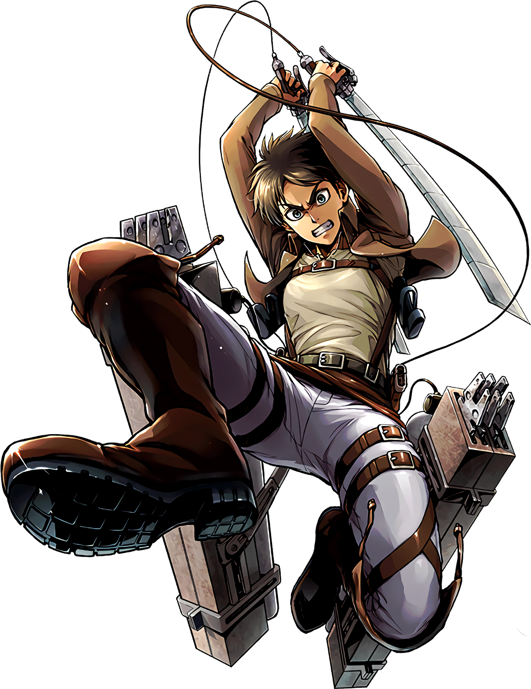
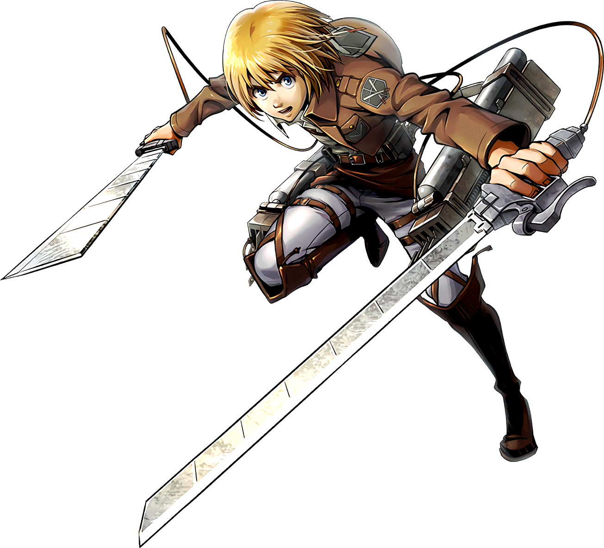

Always be updated for latest anime released or manga stories all news and updates you've ever need about animes
Join us and enjoy moments of twists , actions and entertainment
Attack On Titan (Shingeki no Kyojin) is a groundbreaking manga series created by Hajime Isayama, first serialized in 2009. The series gained immense popularity and was adapted into a highly acclaimed anime. Set in a post-apocalyptic world where humanity is on the brink of extinction due to giant humanoid creatures known as Titans, the narrative delves deep into themes of survival, freedom, identity, and the moral complexities of war.
The story takes place in a world where humanity is confined within massive walled cities to protect themselves from Titans—gigantic beings that devour humans seemingly without reason. The three concentric walls—Wall Maria, Wall Rose, and Wall Sina—serve as humanity’s last bastions against extinction. Within these walls, society has developed a feudal system, with a distinct hierarchy that creates class divisions and social unrest.
The storyline begins with the sudden appearance of the Colossal Titan, which breaches Wall Maria, allowing smaller Titans to invade. This event leads to the destruction of Eren's hometown and the death of his mother, igniting a fierce desire for vengeance against the Titans. Eren, Mikasa, and Armin enlist in the military, joining the Survey Corps to fight against the Titans and uncover the truth behind their existence.
The protagonist, who dreams of freedom beyond the walls. His intense desire to eradicate Titans drives much of the narrative.
Eren's adoptive sister and a prodigy in combat. She is fiercely protective of Eren and deeply loyal to him.
Eren’s childhood friend, known for his strategic mind. His intelligence often complements Eren’s impulsive nature.
A captain in the Survey Corps, known as humanity’s strongest soldier. Levi is cold and pragmatic but deeply respects his comrades.
The initial arc sets the tone for the series, introducing the brutal reality of living under constant threat. The Colossal Titan’s attack leads to the introduction of key characters and establishes the urgency of humanity’s plight.
As Eren and his friends undergo rigorous training, they learn about the Titans and develop their combat skills. During the Battle of Trost, Eren discovers his ability to transform into a Titan, revealing a pivotal plot point that alters the dynamics of the conflict. This transformation raises questions about the nature of Titans and Eren's identity.
This arc introduces a new antagonist, the Female Titan, who is revealed to be Annie Leonhart, a fellow soldier. This storyline explores themes of betrayal and the complexity of human emotions, as Eren grapples with the implications of having a friend who is also a Titan shifter.
As the series progresses, more Titan shifters emerge, including Reiner Braun (the Armored Titan) and Bertolt Hoover (the Colossal Titan). This arc focuses on the conflict between the Survey Corps and these shifters, deepening the narrative’s exploration of loyalty, identity, and the cycle of hatred.
Eren and his friends uncover secrets about the Titans, their origins, and the history of the world outside the walls. They learn about Marley, a nation that oppresses the Eldians (the descendants of those who can become Titans). This revelation shifts the focus from mere survival to a broader struggle for freedom and justice.
The story shifts to Marley, where the political landscape and the dynamics between Eldians and Marleyans are explored. Eren’s transformation from a determined young man seeking freedom to a more complex character willing to embrace violence raises questions about morality and the cost of freedom.
The climax involves Eren initiating the "Rumbling," a catastrophic event that unleashes countless Colossal Titans contained within the walls to march across the world, aiming to eliminate all humanity outside Paradis. This drastic measure leads to internal conflict among the main characters, particularly between Eren and his friends, culminating in a tragic and complex resolution that examines the costs of freedom and the cycle of vengeance.
The climax involves Eren initiating the "Rumbling," a catastrophic event that unleashes countless Colossal Titans contained within the walls to march across the world, aiming to eliminate all humanity outside Paradis. This drastic measure leads to internal conflict among the main characters, particularly between Eren and his friends, culminating in a tragic and complex resolution that examines the costs of freedom and the cycle of vengeance.
Attack on Titan is a masterful work that combines thrilling action with profound philosophical questions. Its richly developed characters, intricate plotlines, and exploration of human nature make it a landmark series in the manga and anime landscape. The journey from the walls of Paradis to the broader world reflects humanity’s struggles against tyranny and the quest for identity, leaving a lasting impact on its audience. As the story unfolds, it challenges viewers to reflect on the costs of freedom, the nature of humanity, and the enduring cycle of conflict.